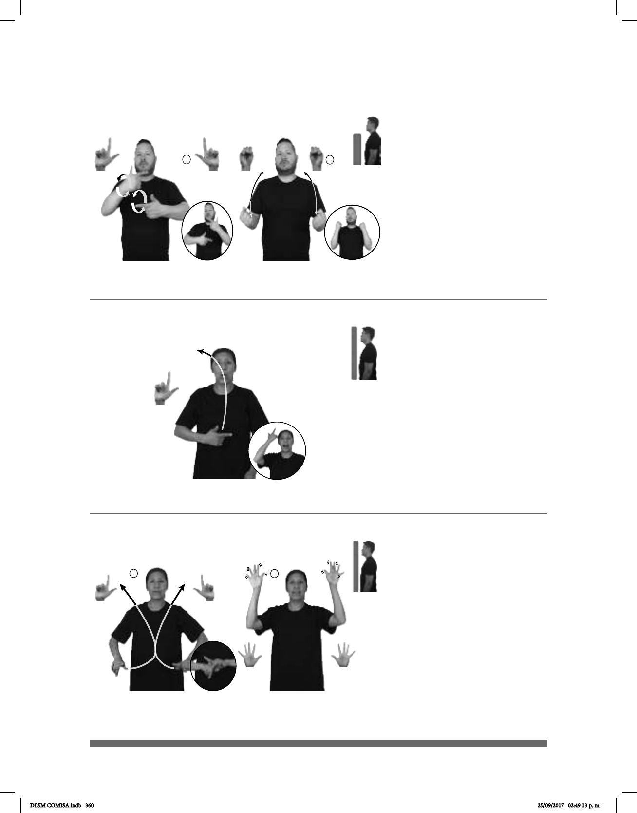

360
Seña: SC: I. SB; II. SS
I. MD y MB L.1; II. S.1
I. MD y MB palmas hacia
adentro; II. Palmas hacia adentro.
I. MD y MB a la altura del
pecho; II. De la cintura a los hombros.
I. La MD y la MB se
mueven formando círculos
alternadamente; II. Las manos se mueven
formando arcos repetidamente.
sust. m. Lugar acondicionado
para hacer gimnasia, o que cuenta con el
equipo necesario para ejercitar el cuerpo y
entrenar box, levantamiento de pesas,
Seña: SM
L.1
Palma hacia adentro.
Del pecho a la cabeza,
del centro al lado derecho.
La mano se mueve
formando un arco.
sust. f. Es el nombre
de un himno litúrgico o rezo de la
misa católica.
La seña se usa en la
comunidad sorda católica.
Seña: SC: I. y II. SS
I. L.1; II. 5.1
I. Palmas hacia abajo; II.
Palmas hacia afuera.
I. A la altura de la cintura; II.
Del pecho a la cara.
I. Las manos cruzan hacia el
centro y llegan a un mismo punto; II. Las
manos parten de un mismo punto y luego se
abren hacia arriba mientras cada uno de los
dedos se mueven alternadamente.
sust. f. Paraíso, lugar a
muerte y en el que pueden disfrutar de la
visión de Dios.
La seña se usa en la
comunidad sorda Amistad Cristiana y
mormona.
(L-59)
(L-58)
(L-60)
DIARIO pro-YO IR LUGAR GIMNASIO
Todos los días voy al gimnasio.
BIBLIA
derecha
DECIR
según
TÍTULO “GLORIA DIOS”
La biblia dice: “Gloria a Dios”
OJALÁ GLORIA ALCANZAR
Ojalá que alcance la gloria.
DLSM COMISA.indb 360 25/09/2017 02:49:13 p. m.